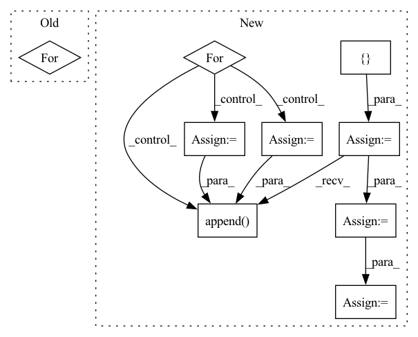

Pattern ID :33023

Before Change
)
grasp_poses = np.hstack([pcd_in_obj, quaternion_in_obj])
for grasp_pose in grasp_poses:
pp.draw_pose(
np.hsplit(grasp_pose, [3]),
parent=env.fg_object_id,
length=0.05,
After Change
grasp_poses = np.hstack([pcd_in_obj, quaternion_in_obj])
// pose representation -> point-normal representation
grasp_points = []
for grasp_pose in grasp_poses:
ee_to_obj = np.hsplit(grasp_pose, [3])
grasp_point_start = ee_to_obj[0]
grasp_point_end = mercury.geometry.transform_points(
[[0, 0, 1]], mercury.geometry.transformation_matrix(*ee_to_obj)
)[0]
grasp_points.append(np.hstack([grasp_point_start, grasp_point_end]))
pp.draw_pose(
np.hsplit(grasp_pose, [3]),
parent=env.fg_object_id,
length=0.05,
width=3,
)
grasp_points = np.array(grasp_points)
R = reorient_poses.shape[0]
G = grasp_points.shape[0]
O = object_fg_flags.shape[0]
object_fg_flags = object_fg_flags[None].repeat(R, axis=0)
object_labels = object_labels[None].repeat(R, axis=0)
object_poses = object_poses[None].repeat(R, axis=0)
object_fg_flags = object_fg_flags[:, None].repeat(G, axis=1)
object_labels = object_labels[:, None].repeat(G, axis=1)
object_poses = object_poses[:, None].repeat(G, axis=1)
reorient_poses = reorient_poses[:, None].repeat(G, axis=1)
grasp_poses = grasp_poses[None].repeat(R, axis=0)
grasp_points = grasp_points[None].repeat(R, axis=0)
object_fg_flags = object_fg_flags.reshape(R * G, O)
object_labels = object_labels.reshape(R * G, O, 7)
object_poses = object_poses.reshape(R * G, O, 7)
reorient_poses = reorient_poses.reshape(R * G, 7)
grasp_poses = grasp_poses.reshape(R * G, 7)
grasp_points = grasp_points.reshape(R * G, 6)
with torch.no_grad():
pickable_pred = model(
In pattern: SUPERPATTERN
Frequency: 3
Non-data size: 9
Instances
Fragment ID: 95532336
Project Name: wkentaro/reorientbot
Commit Name: 5b53b8ad37d876c8548a2e744259ce87d3fa8389
Time: 2021-07-02
Author: www.kentaro.wada@gmail.com
File Name: examples/reorient/pickable_eval.py
M Class Name: AnonimousClass
N Class Name: AnonimousClass
M Method Name: get_goal_oriented_reorient_poses(1)
N Method Name: get_goal_oriented_reorient_poses(1)
M Parent Class:
N Parent Class:
M File Name: examples/reorient/pickable_eval.py
N File Name: examples/reorient/pickable_eval.py
M Start Line: 56
M End Line: 67
N Start Line: 56
N End Line: 110
'>
Before Change
)
grasp_poses = np.hstack([pcd_in_obj, quaternion_in_obj])
for grasp_pose in grasp_poses:
pp.draw_pose(
np.hsplit(grasp_pose, [3]),
parent=env.fg_object_id,
length=0.05,
After Change
grasp_poses = np.hstack([pcd_in_obj, quaternion_in_obj])
// pose representation -> point-normal representation
grasp_points = []
for grasp_pose in grasp_poses:
ee_to_obj = np.hsplit(grasp_pose, [3])
grasp_point_start = ee_to_obj[0]
grasp_point_end = mercury.geometry.transform_points(
[[0, 0, 1]], mercury.geometry.transformation_matrix(*ee_to_obj)
)[0]
grasp_points.append(np.hstack([grasp_point_start, grasp_point_end]))
pp.draw_pose(
np.hsplit(grasp_pose, [3]),
parent=env.fg_object_id,
length=0.05,
width=3,
)
grasp_points = np.array(grasp_points)
R = reorient_poses.shape[0]
G = grasp_points.shape[0]
O = object_fg_flags.shape[0]
object_fg_flags = object_fg_flags[None].repeat(R, axis=0)
object_labels = object_labels[None].repeat(R, axis=0)
object_poses = object_poses[None].repeat(R, axis=0)
object_fg_flags = object_fg_flags[:, None].repeat(G, axis=1)
object_labels = object_labels[:, None].repeat(G, axis=1)
object_poses = object_poses[:, None].repeat(G, axis=1)
reorient_poses = reorient_poses[:, None].repeat(G, axis=1)
grasp_poses = grasp_poses[None].repeat(R, axis=0)
grasp_points = grasp_points[None].repeat(R, axis=0)
object_fg_flags = object_fg_flags.reshape(R * G, O)
object_labels = object_labels.reshape(R * G, O, 7)
object_poses = object_poses.reshape(R * G, O, 7)
reorient_poses = reorient_poses.reshape(R * G, 7)
grasp_poses = grasp_poses.reshape(R * G, 7)
grasp_points = grasp_points.reshape(R * G, 6)
with torch.no_grad():
pickable_pred = model(
object_fg_flags=torch.as_tensor(object_fg_flags).float().cuda(),
object_labels=torch.as_tensor(object_labels).float().cuda(),
object_poses=torch.as_tensor(object_poses).float().cuda(),
grasp_pose=torch.as_tensor(grasp_points).float().cuda(),
reorient_pose=torch.as_tensor(reorient_poses).float().cuda(),
)
pickable_pred = pickable_pred.cpu().numpy()
pickable_pred = pickable_pred.reshape(R, G).mean(axis=1)
grasp_poses = grasp_poses.reshape(R, G, 7)
grasp_points = grasp_points.reshape(R, G, 6)
reorient_poses = reorient_poses.reshape(R, G, 7)
return reorient_poses[:, 0, :], pickable_pred, grasp_poses[0, :, :]
'>
Fragment ID: 95532466
Project Name: wkentaro/safepicking
Commit Name: 5b53b8ad37d876c8548a2e744259ce87d3fa8389
Time: 2021-07-02
Author: www.kentaro.wada@gmail.com
File Name: examples/reorient/pickable_eval.py
M Class Name: AnonimousClass
N Class Name: AnonimousClass
M Method Name: get_goal_oriented_reorient_poses(1)
N Method Name: get_goal_oriented_reorient_poses(1)
M Parent Class:
N Parent Class:
M File Name: examples/reorient/pickable_eval.py
N File Name: examples/reorient/pickable_eval.py
M Start Line: 56
M End Line: 67
N Start Line: 56
N End Line: 110
'>
Before Change
bins = self.fromBits(torch.Tensor(bins).to(self.device)).long()
vec = torch.take(self.centroids[self.nbits], bins)
for i in range(self.num_hadamard):
vec = self.irht(vec, int(seed + (self.num_hadamard - 1) - i))
return (scale * vec)[:int(dim)].cpu().numpy()
After Change
total_dim = int(metadata[1])
curr_index = 0
vec = []
for k in range(2, max(metadata.keys()) + 1, 2):
scale = metadata[k]
dim = int(metadata[k + 1])
vec.append(self.decompress_slice(bins[curr_index:curr_index + dim], scale, dim, seed))
curr_index += dim
vec = torch.cat(vec)
vec = vec[:total_dim]
return vec.cpu().numpy()
'>
Fragment ID: 95532425
Project Name: intel/openfl
Commit Name: c10577cb32201c45846d920f871e4bcab76e37ed
Time: 2023-01-13
Author: 30897761+yanivbi@users.noreply.github.com
File Name: openfl/pipelines/eden_pipeline.py
M Class Name: Eden
N Class Name: Eden
M Method Name: decompress(3)
N Method Name: decompress(5)
M Parent Class:
N Parent Class:
M File Name: openfl/pipelines/eden_pipeline.py
N File Name: openfl/pipelines/eden_pipeline.py
M Start Line: 252
M End Line: 260
N Start Line: 337
N End Line: 354